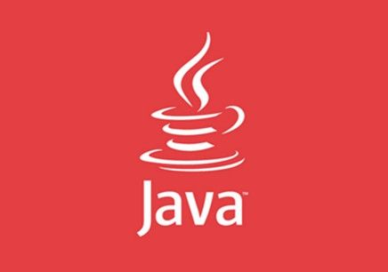
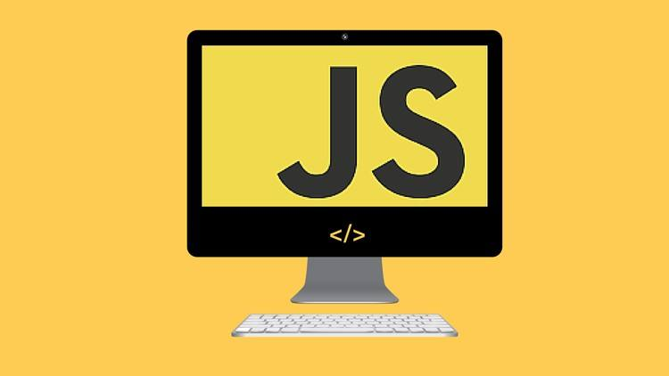
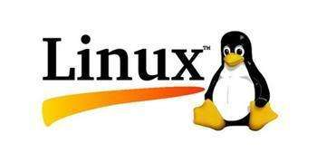

使用flex布局(左图+右标题、简介)列表，图片宽度固定，右边内容自适应，简介超过两行使用省略号。
.flex-list-space {
background: #f3f3f3;
display: flex;
justify-content: space-between;
}
.space-img {
width: 120px;
height: 120px;
object-fit: coverl;
}
.space-text {
display: flex;
background: #fafafa;
flex-wrap: wrap;
margin-left: 10px;
}
.space-text-tit {
font-size: 18px;
font-weight: 700;
}
.space-text-desc {
display: -webkit-box;
-webkit-box-orient: vertical;
-webkit-line-clamp: 2;
max-height: 2.5em;
overflow: hidden;
text-overflow: ellipsis;
}
C语言
C 语言是一种通用的、面向过程式的计算机程序设计语言。1972 年，为了移植与开发 UNIX 操作系统，
丹尼斯·里奇在贝尔电话实验室设计开发了 C 语言。
C 语言是一种广泛使用的计算机语言，它与 Java 编程语言一样普及，二者在现代软件程序员之间都得到广泛使用。
当前最新的C语言标准为 C11 ，在它之前的C语言标准为 C99。
使用flex布局制作三列等宽(上图+下标题、简介)列表，最小间距20px，简介超过三行使用省略号。
.three-flex {
width: 100%;
display: flex;
flex-wrap: wrap;
}
.three-flex li {
width: 33.3333333%;
}
.three-flex img {
width: 100%;
height: 150px;
object-fit: cover;
}
.three-flex-text {
flex-wrap: wrap;
}
.three-flex-text h5 {
margin: 10px 0;
}
.three-flex-desc {
display: -webkit-box;
-webkit-box-orient: vertical;
-webkit-line-clamp: 3;
overflow: hidden;
text-overflow: ellipsis;
}
-
C语言
C 语言是一种通用的、面向过程式的计算机程序设计语言。1972 年，为了移植与开发 UNIX 操作系统， 丹尼斯·里奇在贝尔电话实验室设计开发了 C 语言。 C 语言是一种广泛使用的计算机语言，它与 Java 编程语言一样普及，二者在现代软件程序员之间都得到广泛使用。 当前最新的C语言标准为 C11 ，在它之前的C语言标准为 C99。 -

Java
Java 是由Sun Microsystems公司于1995年5月推出的高级程序设计语言。 Java可运行于多个平台，如Windows, Mac OS，及其他多种UNIX版本的系统。 本教程通过简单的实例将让大家更好的了解JAVA编程语言。 -

javascript
JavaScript 是 Web 的编程语言。 所有现代的 HTML 页面都使用 JavaScript。 JavaScript 非常容易学。 本教程将教你学习从初级到高级JavaScript知识。 -

linux
Linux，全称GNU/Linux，是一套免费使用和自由传播的类UNIX操作系统， 其内核由林纳斯·本纳第克特·托瓦兹于1991年第一次释出，它主要受到Minix和Unix思想的启发， 是一个基于POSIX和Unix的多用户、多任务、支持多线程和多CPU的操作系统。 它能运行主要的Unix工具软件、应用程序和网络协议。它支持32位和64位硬件。 Linux继承了Unix以网络为核心的设计思想，是一个性能稳定的多用户网络操作系统。 Linux有上百种不同的发行版，如基于社区开发的debian、archlinux， 和基于商业开发的Red Hat Enterprise Linux、SUSE、oracle linux等。 -
php
PHP是世界上最好的语言 -
.jpg)
Python
Python 的 3.0 版本，常被称为 Python 3000，或简称 Py3k。相对于 Python 的早期版本， 这是一个较大的升级。为了不带入过多的累赘，Python 3.0 在设计的时候没有考虑向下兼容。 Python 介绍及安装教程我们在Python 2.X 版本的教程中已有介绍，这里就不再赘述。 你也可以点击 Python2.x与3.x版本区别 来查看两者的不同。
2、使用flex布局在1200px宽度中制作四列等宽、多行的(上图+下标题)列表，间距20px，两边贴边。
.four-aequilate {
width: 1200px;
margin: 0 auto;
display: flex;
justify-content: space-between;
flex-wrap: wrap;
}
.aequilate-item {
width: 285px;
background: #f3f3f3;
margin-bottom: 20px;
display: flex;
flex-wrap: wrap;
}
.aequilate-item img {
width: 100%;
height: 150px;
object-fit: cover;
}
.aequilate-item h5 {
margin: 5px auto;
}
C语言
C语言
C语言
C语言
C语言
C语言
C语言
C语言
使用flex布局（左图+右文）列表，然后偶数行变成（左文右图）。
.flex-even {
background: #f3f3f3;
}
.even-item {
display: flex;
justify-content: space-between;
border-bottom: 20px solid #ffffff;
}
.even-img {
margin-right: 12px;
}
.even-img img {
width: 100%;
object-fit: cover;
border-radius: 50%;
}
.even-text {
display: -webkit-box;
-webkit-box-orient: vertical;
-webkit-line-clamp: 3;
overflow: hidden;
text-overflow: ellipsis;
}
.flex-even .even-item:nth-child(2n) {
flex-direction: row-reverse;
}
PHP是世界上最好的语言
PHP 是一种创建动态交互性站点的强有力的服务器端脚本语言。
PHP 是免费的，并且使用非常广泛。同时，对于像微软 ASP 这样的竞争者来说，PHP 无疑是另一种高效率的选项。
PHP是世界上最好的语言
PHP 是一种创建动态交互性站点的强有力的服务器端脚本语言。
PHP 是免费的，并且使用非常广泛。同时，对于像微软 ASP 这样的竞争者来说，PHP 无疑是另一种高效率的选项。
PHP是世界上最好的语言
PHP 是一种创建动态交互性站点的强有力的服务器端脚本语言。
PHP 是免费的，并且使用非常广泛。同时，对于像微软 ASP 这样的竞争者来说，PHP 无疑是另一种高效率的选项。
PHP是世界上最好的语言
PHP 是一种创建动态交互性站点的强有力的服务器端脚本语言。
PHP 是免费的，并且使用非常广泛。同时，对于像微软 ASP 这样的竞争者来说，PHP 无疑是另一种高效率的选项。
使用flex布局微信朋友圈
PHP是世界上最好的语言
PHP 是一种创建动态交互性站点的强有力的服务器端脚本语言。
PHP 是免费的，并且使用非常广泛。同时，对于像微软 ASP
这样的竞争者来说，PHP 无疑是另一种高效率的选项。
21分钟前
赞
评论
张三: PHP是世界上最好的语言
李四: PHP是世界上最好的语言
王麻子: PHP是世界上最好的语言